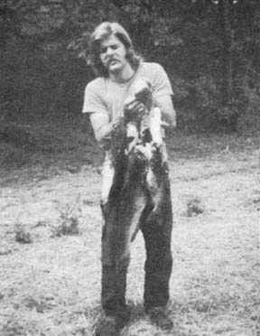
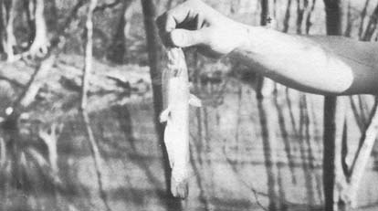
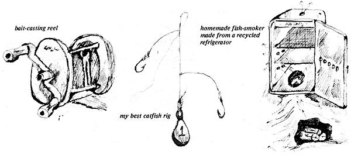
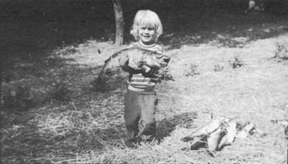

Ever shuffled out of the house at four a.m. with a fishing pole over your shoulder? Nearly every country boy can remember at least one daybreak of rounding up cheese, angleworms, night crawlers, dough balls or chicken parts, and running off for some good catfishin'.
Matter of fact, many of those boys don't quit when they grow up. Take me, for instance. Though I greatly enjoy the sporting aspects of wetting a line, I'm also a staunch "meat" fisherman. That is, I like to pursue a quarry that I can appreciate on the table . . . which is why I'm such an avid fan of catfish. The critters are common and widespread, bite when other fish won't, reach super sizes . . . and, above all, are incredibly tasty. My family of three here in Maryland enjoys this whiskered delight at least once a month, and-since catfish are available to most folks-their nutritional goodness can become an important part of anyone's diet.
Like to try catfishing? Get up bright and early one morning and head for the nearest river, lake or farm pond. Nighttime will also produce good results. In fact, "cats" can be caught quite readily at all times of the day, at all water temperatures and depths. The best time to plan your expedition, however, is after a heavy rain . . . especially in the spring. When other fairweather fish are sluggish and temperamental, the hungry catfish forage about in the freshly rejuvenated waters.
If you fish regularly, you probably have a favorite spot. If not, just ask some of the local old-timers. Though angling stories are famed for their dishonesty, there's generally some darn good tips in them somewhere!
I prefer an old-fashioned bait-casting rod and reel but almost any type of arrangement-from Grandma's cane pole to a fancy spinning rig-will catch a catfish. Use a small-to-medium-sized hook and a sinker that's heavy enough to keep your bait on the bottom, in cat territory. The weight needed to do this will vary depending on water conditions.
Most conceivable baits will entice these tasty critters, but garden worms are the old standby (Just don't take too many out of the vegetable patch!). Cast a generous bait to the bottom, and wait for the slow, deliberate tugging which signals that a catfish is biting. Above all, be patient!
If the water you've chosen to fish is muddy, sluggish or still, you're very likely to catch a bullhead (a member of the catfish family that grows to no more than 20 inches long and 4-1/2 pounds in weight). All of the three common color phases of the bullhead-black, brown and yellow-have pink meat that's sweet and fine. Faster, clearer water will generally turn up nice channel and blue cats (especially from that little pool beneath a steady current where natural nutrients abound). The variety really doesn't matter, however, because all catfish are readily distinguishable from other fish (by the "whiskers" or barbs that grow out of their upper jaws, and the skin-instead of scales-on their bodies) and all are among the finest eating anywhere.
Once you've landed your eatin'-size fish (eight inches and up), you're faced with the procedure of dressing him out. No problem. First, grip the critter so that his three protruding fin spines are firmly extended between your fingers. Beware of those spikes . . . they can easily inflict a painful, long-lasting wound! Next-with a sharp knife-cut a shallow ring about the fish's neck, immediately behind the gill openings.
Since all catfish are scaleless they must be completely skinned . . . but the operation is actually pretty easy. Grasp the edge of your incision with a handy pair of pliers and simply peel the skin down banana style. Then remove the head, fins, tail and entrails so that you're left with a large piece of meat that is ready to be washed, cooked and eaten. (Incidentally, the above system works for other scaleless fish and rattlesnakes!)
How will you cook your catfish? There are probably about a million ways, all of 'em good, so I'll just give three popular methods of preparation that my family likes.
The simplest smoker I know is merely a worn-out or discarded refrigerator with a few minor alterations. First remove the guts of the machine and knock a fist-sized or larger hole in the cabinet's floor. Second, drill 6-10 one-inch holes in each side and in the door, about three-quarters of the way up. Then put one more hole in the top and-when the results of a smoldering fire are introduced through the opening in the cabinet's bottom-you have an effective smokehouse. The racks may be retained for hanging your fish. I've sampled bullhead prepared in this homemade wonder, and it was truly delicious.
By the way, a very complete little manual on fish smoking, salting, curing and canning is available for $1.00 from:
Netcraft Company
3101 Sylvania Road
Toledo, Ohio 43613
[1] Skin any size "cat" and remove its entrails.
[2] Make a brine solution of 1 pound salt to each gallon of water and immerse the meat in the liquid overnight.
[3] Place the catfish in dry salt for 1-3 hours. Then wash it thoroughly.
[4] Dry the fish outdoors for 1-3 hours.
[5] Hang the meat securely in a smoker so that the pieces don't touch and aren't overcrowded.
[6] Stack wood at the entrance of the smoker tunnel and start a small, steady fire. Ideal fuels are seasoned maple, birch, oak, hickory, sweet bay, river mangrove, palmetto roots, buttonwood, orange, cypress and apple . . . or corncobs or coconut husks(!).
[7] When the fire is smoldering steadily-not blazing-close the smoker door. The desired smudgy combustion can be maintained by dousing the coals regularly with sawdust, etc.
[8] After a few hours of hot-smoking (100-150° F), your fish is ready to be eaten or kept for up to-roughly-four weeks, depending on how long it was cured.
[9] Wrap the meat in paper and store it in wooden boxes in a cool, dry place.
CATFISH STEW
6 small catfish, cleaned
1 pint milk
2 tablespoons butter
1 /4 teaspoon salt
pepper to tasty
Boil your "cats" until their flesh can be separated from the bones. Then dice the meat and put the pieces in a saucepan with the other ingredients. Heat the rich brew and serve.
This is a general recipe. Any combination of vegetables and may prove tasty with the basic mixture.
FRIED CATFISH
cleaned catfish
enough egg, beaten, to coat above
mixture of cornmeal and flour
oil or shortening
salt and pepper to taste
Dip the fish in the raw beaten egg, then roll the chunks of meat in the cornmeal-flour mixture. Drop the prepared piece in a pan of hot oil and jump back. Brown them quickly on on both sides and serve. Absolutely delicious!
|
 We caught a walloping string of catfish in less than two hours of fishing. |
 This small yellow bullhead wasn't big enough to eat, but we took his picture anyway before litting him go. |
 Our son Jake marvels at a giant nine-pound blue catfish |
|
 |
|
|